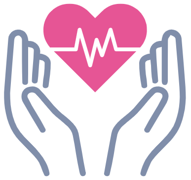

Find Connection in Times of Confusion
Here at MediWeb, we understand how confusing and foreboding a new diagnosis is, no matter its severity. We are dedicated to helping you find a community of people with shared experiences. Through our forums and messaging functions, we hope to provide a sense of calm and hope in your times of trouble. We strive to keep this site a helpful and safe place for you and your loved ones.

Talk with Peers and Professionals
Gain understanding about your diagnosis from professionals and others. Ask questions in our medical forums, or simply make new friends. Having a community that can understand and relate to you can be very comforting through the tough situations you are facing. You can rest assured that those marked as "Licensed Professionals" on our website have been thoroughly vetted and verified, so you know all information is accurate and with your best interests in mind.
Regan Miller
My name is Regan Miller and I’m a third year cognitive science student at UCSC minoring in computer science. I think connecting with others who have a unique, personal understanding of what exactly you are going through is a really valuable resource when you are faced with a life changing diagnosis. Medical issues are often overwhelming and can become isolating because of extreme physical and mental stresses that make socializing much more difficult and can be difficult for most people to understand. That’s why I think giving people a space to share information, talk about their struggles and find a community of those who can truly empathize is so important.
Sabrina Fogel
My name is Sabrina Fogel, and I am a 3rd year Computer Science major and Theater Arts minor. I believe MediWeb will be a great place for people to come together to share stories, help each other, and provide comfort to those who are in need. As someone who had a family member recently get a severe medical diagnosis, I would definitely use a website like MediWeb to get more information about how I can best support them. Due to the amount of misinformation spread on the internet, there needs to be a place where people can go and feel assured that the information they receive comes from those who have similar lived experiences or professional knowledge.
Sneha Yalavarti
I’m Sneha Yalavarti, I am a 3rd year Cognitive Science Major and a Computer Science Minor. I believe that our website can be extremely helpful for people who have a new diagnosis due to the community aspect we bring forward. As someone with a chronic illness, I truly wish that I had a similar web service available when I first got my diagnosis because it was extremely overwhelming and stressful, having such a resource would have been comforting and useful.